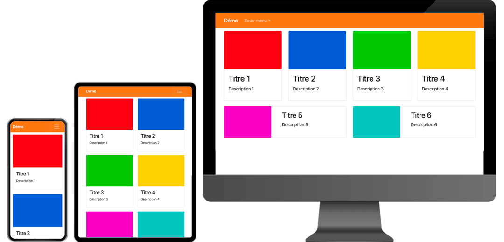

Pour cet exercice vous devrez recréer une mise en page responsive constituée de composantes Bootstrap.
Aperçu du résultat 👇

Matériel
Pen de départ
Le CSS et JS de Bootstrap 5 est inclus dans celui-ci et certains éléments visuels sont déjà aussi présents afin de vous faciliter la tâche.
NavBar
Ajoutez une navbar pour représenter celle démontrée dans l'exemple ci-haut.
Ajoutez en CSS la couleur de fond #f08a30 à la navbar.
Ajustez son thème de couleur pour que le texte devienne blanc et contraste plus avec le fond orange.
Ajoutez un logo textuel avec la mention "Démo".
Ajoutez un menu déroulant intitulé "Sous-menu".
À l'intérieur du menu déroulant, ajoutez 6 liens vides (#) Titre 1, Titre 2, …, Titre 6
Ajoutez les classes nécessaires (avec les breakpoints) pour réaliser les 3 version (mobile, tablette et desktop)
Cartes
Ajoutez en CSS 10px verticalement à l'extérieur des cartes afin d'éviter qu'elles ne se touchent.
Chaque carte doit prendre toute la largeur disponible par défaut.
À partir du breakpoint sm, deux cartes doivent afficher par ligne.
À partir du breakpoint md, les 4 premières cartes doivent afficher sur une ligne et les deux dernières sur une autre.
À partir du breakpoint lg, les 2 dernières cartes doivent afficher en format horizontal.
Notes de cours 📚
Cartes
Permettent de générer rapidement et facilement des cartes
NavBar
La barre de navigation Bootstrap